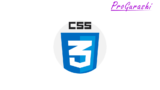

<section id="popular-section_container">
    <div class="main-content">
        <div id="main-scroll" class="main-scroll">
            <h1>人気記事</h2>
            <aside id="popular_entries-4" class="widget widget-main-scroll widget_popular_entries">
                <div class="popular-entry-cards widget-entry-cards no-icon cf border-partition ranking-visible">
                    <a href="https://prograshi.com/language/python/typeerror-nonetype/" class="popular-entry-card-link widget-entry-card-link a-wrap no-1" title="【Python】TypeError: 'NoneType'のエラー原因と対処法まとめ（初心者向け・実例でわかりやすく解説）" data-nodal="">
                        <div class="post-5060 popular-entry-card widget-entry-card e-card cf post type-post status-publish format-standard has-post-thumbnail hentry category-python-post">
                            <figure class="popular-entry-card-thumb widget-entry-card-thumb card-thumb">
                                
                                <noscript></noscript>
                            </figure><!-- /.popular-entry-card-thumb -->
                            <div class="popular-entry-card-content widget-entry-card-content card-content">
                                <div class="popular-entry-card-title widget-entry-card-title card-title">【Python】TypeError: 'NoneType'のエラー原因と対処法まとめ（初心者向け・実例でわかりやすく解説）</div>
                                <div class="popular-entry-card-date widget-entry-card-date display-none">
                                    <span class="popular-entry-card-post-date widget-entry-card-post-date post-date">2024/2/27</span>
                                    <span class="popular-entry-card-update-date widget-entry-card-update-date post-update">2024/2/27</span>
                                </div>
                            </div><!-- /.popular-entry-content -->
                        </div><!-- /.popular-entry-card -->
                    </a><!-- /.popular-entry-card-link -->
                    <a href="https://prograshi.com/pc/windows-system-font/" class="popular-entry-card-link widget-entry-card-link a-wrap no-2" title="【Windows】システムフォントを変更する方法" data-nodal="">
                        <div class="post-439 popular-entry-card widget-entry-card e-card cf post type-post status-publish format-standard has-post-thumbnail hentry category-pc-post tag-windows-post">
                            <figure class="popular-entry-card-thumb widget-entry-card-thumb card-thumb">
                                
                                <noscript></noscript>
                            </figure><!-- /.popular-entry-card-thumb -->
                            <div class="popular-entry-card-content widget-entry-card-content card-content">
                                <div class="popular-entry-card-title widget-entry-card-title card-title">【Windows】システムフォントを変更する方法</div>
                                <div class="popular-entry-card-date widget-entry-card-date display-none">
                                    <span class="popular-entry-card-post-date widget-entry-card-post-date post-date">2023/4/1</span>
                                    <span class="popular-entry-card-update-date widget-entry-card-update-date post-update">2023/11/3</span>
                                </div>
                            </div><!-- /.popular-entry-content -->
                        </div><!-- /.popular-entry-card -->
                    </a><!-- /.popular-entry-card-link -->
                    <a href="https://prograshi.com/design/css/media-query/" class="popular-entry-card-link widget-entry-card-link a-wrap no-3" title="【CSS】メディアクエリ(@media)とは何か？使い方を実例で解説｜.cssファイルやlinkタグでの画面幅以上・以下の指定（初心者向け、わかりやすい）" data-nodal="">
                        <div class="post-7435 popular-entry-card widget-entry-card e-card cf post type-post status-publish format-standard has-post-thumbnail hentry category-css-post">
                            <figure class="popular-entry-card-thumb widget-entry-card-thumb card-thumb">
                                
                                <noscript></noscript>
                            </figure><!-- /.popular-entry-card-thumb -->
                            <div class="popular-entry-card-content widget-entry-card-content card-content">
                                <div class="popular-entry-card-title widget-entry-card-title card-title">【CSS】メディアクエリ(@media)とは何か？使い方を実例で解説｜.cssファイルやlinkタグでの画面幅以上・以下の指定（初心者向け、わかりやすい）</div>
                                <div class="popular-entry-card-date widget-entry-card-date display-none">
                                    <span class="popular-entry-card-post-date widget-entry-card-post-date post-date">2023/6/20</span>
                                    <span class="popular-entry-card-update-date widget-entry-card-update-date post-update">2023/10/1</span>
                                </div>
                            </div><!-- /.popular-entry-content -->
                        </div><!-- /.popular-entry-card -->
                    </a><!-- /.popular-entry-card-link -->
                </div>
            </aside>
            <aside id="categories-6" class="widget widget-main-scroll widget_categories">
                <h1 class="widget-main-scroll-title main-widget-label widget-title">カテゴリー</h1>
                <ul>
                    <li class="cat-item cat-item-79">
                        <a href="https://prograshi.com/category/pc/" data-nodal=""><span class="list-item-caption">PC</span></a>
                    </li>
                    <li class="cat-item cat-item-153">
                        <a href="https://prograshi.com/category/language/html/" data-nodal=""><span class="list-item-caption">HTML</span></a>
                    </li>
                    <li class="cat-item cat-item-80">
                        <a href="https://prograshi.com/category/design/" data-nodal=""><span class="list-item-caption">Design</span></a>
                    </li>
                    <li class="cat-item cat-item-174">
                        <a href="https://prograshi.com/category/general/afiliate/" data-nodal=""><span class="list-item-caption">Affiliate</span></a>
                    </li>
                    <li class="cat-item cat-item-81">
                        <a href="https://prograshi.com/category/design/css/" data-nodal=""><span class="list-item-caption">CSS・SCSS</span></a>
                    </li>
                    <li class="cat-item cat-item-194">
                        <a href="https://prograshi.com/category/language/ruby/" data-nodal=""><span class="list-item-caption">ruby</span></a>
                    </li>
                    <li class="cat-item cat-item-82">
                        <a href="https://prograshi.com/category/framework/rails/" data-nodal=""><span class="list-item-caption">Rails</span></a>
                    </li>
                    <li class="cat-item cat-item-197">
                        <a href="https://prograshi.com/category/general/spreadsheet/" data-nodal=""><span class="list-item-caption">SpreadSheet</span></a>
                    </li>
                    <li class="cat-item cat-item-84">
                        <a href="https://prograshi.com/category/design/affinity/" data-nodal=""><span class="list-item-caption">Affinity</span></a>
                    </li>
                    <li class="cat-item cat-item-199">
                        <a href="https://prograshi.com/category/appsheet/" data-nodal=""><span class="list-item-caption">AppSheet</span></a>
                    </li>
                    <li class="cat-item cat-item-85">
                        <a href="https://prograshi.com/category/platform/database/" data-nodal=""><span class="list-item-caption">Database</span></a>
                    </li>
                    <li class="cat-item cat-item-142">
                        <a href="https://prograshi.com/category/general/command/" data-nodal=""><span class="list-item-caption">Command</span></a>
                    </li>
                    <li class="cat-item cat-item-78">
                        <a href="https://prograshi.com/category/framework/laravel/" data-nodal=""><span class="list-item-caption">Laravel</span></a>
                    </li>
                    <li class="cat-item cat-item-148">
                        <a href="https://prograshi.com/category/framework/nodejs/" data-nodal=""><span class="list-item-caption">Node-js</span></a>
                    </li>
                </ul>
            </aside>
        </div>
    </div>
</section>
